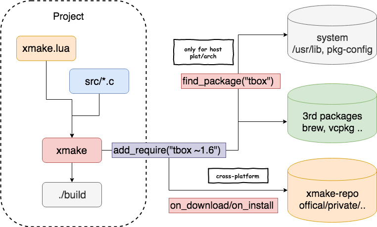

使用远程包¶
前言¶
远程包在用法上更加的简单，只需要设置对应的依赖包就行了，例如：
add_requires("tbox 1.6.*", "libpng ~1.16", "zlib")
target("test", function()
set_kind("binary")
add_files("src/*.c")
add_packages("tbox", "libpng", "zlib")
end)
上面的 add_requires 用于描述当前项目需要的依赖包，而 add_packages 用于应用依赖包到 test 目标，只有设置这个才会自动追加 links, linkdirs, includedirs 等设置。
然后直接执行编译即可：
xmake 会去远程拉取相关源码包，然后自动编译安装，最后编译项目，进行依赖包的链接。
关于包依赖管理的更多相关信息和进展见相关 issues：Remote package management
目前支持的特性¶
- 语义版本支持，例如：">= 1.1.0 < 1.2", "~1.6", "1.2.x", "1.*"
- 提供官方包仓库、自建私有仓库、项目内置仓库等多仓库管理支持
- 跨平台包编译集成支持（不同平台、不同架构的包可同时安装，快速切换使用）
- debug 依赖包支持，实现源码调试
依赖包处理机制¶
这里我们简单介绍下整个依赖包的处理机制：

- 优先检测当前系统目录、第三方包管理下有没有存在指定的包，如果有匹配的包，那么就不需要下载安装了 （当然也可以设置不使用系统包）
- 检索匹配对应版本的包，然后下载、编译、安装（注：安装在特定 xmake 目录，不会干扰系统库环境）
- 编译项目，最后自动链接启用的依赖包
快速上手¶
新建一个依赖 tbox 库的空工程：
执行编译即可，如果当前没有安装 tbox 库，则会自动下载安装后使用：
切换到 iphoneos 平台进行编译，将会重新安装 iphoneos 版本的 tbox 库进行链接使用：
切换到 android 平台 arm64-v8a 架构编译：
语义版本设置¶
xmake 的依赖包管理是完全支持语义版本选择的，例如："~1.6.1"，对于语义版本的具体描述见：https://semver.org/
一些语义版本写法：
add_requires("tbox 1.6.*", "pcre 1.3.x", "libpng ^1.18")
add_requires("libpng ~1.16", "zlib 1.1.2 ||>=1.2.11 <1.3.0")
目前 xmake 使用的语义版本解析器是 uael 贡献的 sv 库，里面也有对版本描述写法的详细说明，可以参考下：版本描述说明
当然，如果我们对当前的依赖包的版本没有特殊要求，那么可以直接这么写：
这会使用已知的最新版本包，或者是 master 分支的源码编译的包，如果当前包有 git repo 地址，我们也能指定特定分支版本：
额外的包信息设置¶
可选包设置¶
如果指定的依赖包当前平台不支持，或者编译安装失败了，那么 xmake 会编译报错，这对于有些必须要依赖某些包才能工作的项目，这是合理的。 但是如果有些包是可选的依赖，即使没有也可以正常编译使用的话，可以设置为可选包：
禁用系统库¶
默认的设置，xmake 会去优先检测系统库是否存在（如果没设置版本要求），如果用户完全不想使用系统库以及第三方包管理提供的库，那么可以设置：
使用调试版本的包¶
如果我们想同时源码调试依赖包，那么可以设置为使用 debug 版本的包（当然前提是这个包支持 debug 编译）：
如果当前包还不支持 debug 编译，可在仓库中提交修改编译规则，对 debug 进行支持，例如：
package("openssl", function()
on_install("linux", "macosx", function (package)
os.vrun("./config %s --prefix=\"%s\"", package:debug() and"--debug"or"", package:installdir())
os.vrun("make -j4")
os.vrun("make install")
end)
end)
传递额外的编译信息到包¶
某些包在编译时候有各种编译选项，我们也可以传递进来，当然包本身得支持：
传递 --small=true 给 tbox 包，使得编译安装的 tbox 包是启用此选项的。
我们可以通过在工程目录中执行：xmake require --info tbox 来获取指定包所有的可配置参数列表和取值说明。
比如：
xmake require --info spdlog
require(spdlog):
-> requires:
-> plat: macosx
-> arch: x86_64
-> configs:
-> header_only: true
-> shared: false
-> vs_runtime: MT
-> debug: false
-> fmt_external: true
-> noexcept: false
-> configs:
-> header_only: Use header only (default: true)
-> fmt_external: Use external fmt library instead of bundled (default: false)
-> noexcept: Compile with -fno-exceptions. Call abort() on any spdlog exceptions (default: false)
-> configs (builtin):
-> debug: Enable debug symbols. (default: false)
-> shared: Enable shared library. (default: false)
-> cflags: Set the C compiler flags.
-> cxflags: Set the C/C++ compiler flags.
-> cxxflags: Set the C++ compiler flags.
-> asflags: Set the assembler flags.
-> vs_runtime: Set vs compiler runtime. (default: MT)
-> values: {"MT","MD"}
其中，configs 里面就是 spdlog 包自身提供的可配置参数，而下面带有 builtin 的 configs 部分，是所有包都会有的内置配置参数。 最上面 requires 部分，是项目当前配置值。
vs_runtime是用于 msvc 下 vs runtime 的设置，v2.2.9 版本中，还支持所有 static 依赖包的自动继承，也就是说 spdlog 如果设置了 MD，那么它依赖的 fmt 包也会自动继承设置 MD。
可以看到，我们已经能够很方便的定制化获取需要的包，但是每个包自身也许有很多依赖，如果这些依赖也要各种定制化配置，怎么办？
可以通过 add_requireconfs 去重写内部依赖包的配置参数。
安装任意版本的包¶
默认情况下，add_requires("zlib>1.2.x") 只能选择到 xmake-repo 仓库中存在的包版本，因为每个版本的包，它们都会有一个 sha256 的校验值，用于包的完整性校验。
因此，未知版本的包不存在校验值，xmake 默认是不让选择使用的，这并不安全。
那如果，我们需要的包版本无法选择使用怎么办呢？有两种方式，一种是提交一个 pr 给 xmake-repo，增加指定包的新版本以及对应的 sha256，例如：
package("zlib", function()
add_versions("1.2.10", "8d7e9f698ce48787b6e1c67e6bff79e487303e66077e25cb9784ac8835978017")
add_versions("1.2.11", "c3e5e9fdd5004dcb542feda5ee4f0ff0744628baf8ed2dd5d66f8ca1197cb1a1")
end)
另外，还有一种方式，就是用户传递 {verify = false} 配置给 add_requires，强制忽略包的文件完整性校验，这样就不需要 sha256 值，因此就可以安装任意版本的包。
当然，这也会存在一定的安全性以及包不完整的风险，这就需要用户自己去选择评估了。
禁用外部头文件搜索路径¶
默认情况下，通过 add_requires 安装的包会采用 -isystem 或者 /external:I 来引用里面的头文件路径，这通常能够避免一些包头文件引入的不可修改的警告信息，
但是，我们还是可以通过设置 {external = false} 来禁用外部头文件，切回 -I 的使用。
默认启用了 external 外部头文件的编译 flags 如下：
手动关闭 external 外部头文件的编译 flags 如下：
第三方依赖包安装¶
xmake 支持对第三方包管理器里面的依赖库安装支持，例如：conan, brew, vcpkg 等
添加 homebrew 的依赖包¶
add_requires("brew::zlib", {alias = "zlib"})
add_requires("brew::pcre2/libpcre2-8", {alias = "pcre2"})
target("test", function()
set_kind("binary")
add_files("src/*.c")
add_packages("pcre2", "zlib")
end)
添加 vcpkg 的依赖包¶
add_requires("vcpkg::zlib", "vcpkg::pcre2")
target("test", function()
set_kind("binary")
add_files("src/*.c")
add_packages("vcpkg::zlib", "vcpkg::pcre2")
end)
我们也可以加个包别名，简化对 add_packages 的使用：
add_requires("vcpkg::zlib", {alias = "zlib"})
add_requires("vcpkg::pcre2", {alias = "pcre2"})
target("test", function()
set_kind("binary")
add_files("src/*.c")
add_packages("zlib", "pcre2")
end)
如果 vcpkg 包带有可选特性，我们也可以直接使用 vcpkg 的语法格式 packagename[feature1,feature2] 来安装包。
例如：
xmake 支持 vcpkg 新的清单模式，通过它，我们就能支持 vcpkg 包的版本选择，例如：
add_requires("vcpkg::zlib 1.2.11")
add_requires("vcpkg::fmt>=8.0.1", {configs = {baseline = "50fd3d9957195575849a49fa591e645f1d8e7156"}})
add_requires("vcpkg::libpng", {configs = {features = {"apng"}}})
target("test", function()
set_kind("binary")
add_files("src/*.cpp")
add_packages("vcpkg::zlib", "vcpkg::fmt", "vcpkg::libpng")
end)
还可以额外配置私有仓库，仅清单模式有效。
local registries = {
{
kind = "git",
repository = "https://github.com/SakuraEngine/vcpkg-registry",
baseline = "e0e1e83ec66e3c9b36066f79d133b01eb68049f7",
packages = {
"skrgamenetworkingsockets"
}
}
}
add_requires("vcpkg::skrgamenetworkingsockets>=1.4.0+1", {configs = {registries = registries}})
添加 conan 的依赖包¶
add_requires("conan::zlib/1.2.11", {alias = "zlib", debug = true})
add_requires("conan::openssl/1.1.1g", {alias = "openssl",
configs = {options = "OpenSSL:shared=True"}})
target("test", function()
set_kind("binary")
add_files("src/*.c")
add_packages("openssl", "zlib")
end)
执行 xmake 进行编译后：
ruki:test_package ruki$ xmake
checking for the architecture ... x86_64
checking for the Xcode directory ... /Applications/Xcode.app
checking for the SDK version of Xcode ... 10.14
note: try installing these packages (pass -y to skip confirm)?
-> conan::zlib/1.2.11 (debug)
-> conan::openssl/1.1.1g
please input: y (y/n)
=> installing conan::zlib/1.2.11 .. ok
=> installing conan::openssl/1.1.1g .. ok
[0%]: cache compiling.release src/main.c
[100%]: linking.release test
自定义 conan/settings 配置：
add_requires("conan::poco/1.10.0", {alias = "poco",
configs = {settings = {"compiler=gcc", "compiler.libcxx=libstdc++11"}}})
其他一些 conan 相关配置项：
{
build = {description = "use it to choose if you want to build from sources.", default = "missing", values = {"all", "never", "missing", "outdated"}},
remote = {description = "Set the conan remote server."},
options = {description = "Set the options values, e.g. OpenSSL:shared=True"},
imports = {description = "Set the imports for conan."},
settings = {description = "Set the build settings for conan."},
build_requires = {description = "Set the build requires for conan.", default = "xmake_generator/0.1.0@bincrafters/testing"}
}
添加 conda 的依赖包¶
add_requires("conda::zlib 1.2.11", {alias = "zlib"})
target("test", function()
set_kind("binary")
add_files("src/*.c")
add_packages("zlib")
end)
添加 pacman 的依赖包¶
我们既支持 archlinux 上的 pacman 包安装和集成，也支持 msys2 上 pacman 的 mingw x86_64/i386 包安装和集成。
add_requires("pacman::zlib", {alias = "zlib"})
add_requires("pacman::libpng", {alias = "libpng"})
target("test", function()
set_kind("binary")
add_files("src/*.c")
add_packages("zlib", "libpng")
end)
archlinux 上只需要：
msys2 上安装 mingw 包，需要指定到 mingw 平台：
添加 clib 的依赖包¶
clib 是一款基于源码的依赖包管理器，拉取的依赖包是直接下载对应的库源码，集成到项目中编译，而不是二进制库依赖。
其在 xmake 中集成也很方便，唯一需要注意的是，还需要自己添加上对应库的源码到 xmake.lua，例如：
add_requires("clib::clibs/bytes@0.0.4", {alias = "bytes"})
target("test", function()
set_kind("binary")
add_files("clib/bytes/*.c")
add_files("src/*.c")
add_packages("bytes")
end)
添加 dub/dlang 的依赖包¶
xmake 也支持 dlang 的 dub 包管理器，集成 dlang 的依赖包来使用。
add_rules("mode.debug", "mode.release")
add_requires("dub::log 0.4.3", {alias = "log"})
add_requires("dub::dateparser", {alias = "dateparser"})
add_requires("dub::emsi_containers", {alias = "emsi_containers"})
add_requires("dub::stdx-allocator", {alias = "stdx-allocator"})
add_requires("dub::mir-core", {alias = "mir-core"})
target("test", function()
set_kind("binary")
add_files("src/*.d")
add_packages("log", "dateparser", "emsi_containers", "stdx-allocator", "mir-core")
end)
添加 ubuntu/apt 的依赖包¶
xmake 支持使用 apt 集成依赖包，也会自动查找 ubuntu 系统上已经安装的包。
add_requires("apt::zlib1g-dev", {alias = "zlib"})
target("test")
set_kind("binary")
add_files("src/*.c")
add_packages("zlib")
添加 gentoo/portage 的依赖包¶
v2.5.4 之后版本支持使用 Portage 集成依赖包，也会自动查找 Gentoo 系统上已经安装的包。
add_requires("portage::libhandy", {alias = "libhandy"})
target("test", function()
set_kind("binary")
add_files("src/*.c")
add_packages("libhandy")
end)
添加 nimble 的依赖包¶
xmake 支持集成 nimble 包管理器中的包，但是目前仅用于 nim 项目，因为它并没有提供二进制的包，而是直接安装的 nim 代码包。
add_requires("nimble::zip>1.3")
target("test", function()
set_kind("binary")
add_files("src/main.nim")
add_packages("nimble::zip")
end)
添加 cargo 的依赖包¶
Cargo 依赖包主要给 rust 项目集成使用，例如：
add_rules("mode.release", "mode.debug")
add_requires("cargo::base64 0.13.0")
add_requires("cargo::flate2 1.0.17", {configs = {features = "zlib"}})
target("test", function()
set_kind("binary")
add_files("src/main.rs")
add_packages("cargo::base64", "cargo::flate2")
end)
不过，我们也可以在 C++ 中通过 cxxbridge 的方式，调用 Rust 库接口，来变相复用所有的 Rust 包。
完整例子见：Call Rust in C++
添加 NuGet 的依赖包¶
xmake 也支持从 dotnet/nuget 中，获取 native 库并快速集成。
add_requires("nuget::zlib_static", {alias = "zlib"})
target("test", function()
set_kind("binary")
add_files("src/*.cpp")
add_packages("zlib")
end)
使用自建私有包仓库¶
如果需要的包不在官方仓库 xmake-repo 中，我们可以提交贡献代码到仓库进行支持。 但如果有些包仅用于个人或者私有项目，我们可以建立一个私有仓库 repo，仓库组织结构可参考：xmake-repo
比如，现在我们有一个私有仓库 repo：git@github.com:myrepo/xmake-repo.git
我们可以通过下面的命令进行仓库添加：
[branch] 是可选的，我们也可以切换到指定 repo 分支
或者我们直接写在 xmake.lua 中：
同样，我们也可以切换到指定 repo 分支
如果我们只是想添加一两个私有包，这个时候特定去建立一个 git repo 太小题大做了，我们可以直接把包仓库放置项目里面，例如：
上面 myrepo 目录就是自己的私有包仓库，内置在自己的项目里面，然后在 xmake.lua 里面添加一下这个仓库位置：
这个可以参考 benchbox 项目，里面就内置了一个私有仓库。
我们甚至可以连仓库也不用建，直接定义包描述到项目 xmake.lua 中，这对依赖一两个包的情况还是很有用的，例如：
package("libjpeg", function()
set_urls("http://www.ijg.org/files/jpegsrc.$(version).tar.gz")
add_versions("v9c", "650250979303a649e21f87b5ccd02672af1ea6954b911342ea491f351ceb7122")
on_install("windows", function (package)
os.mv("jconfig.vc", "jconfig.h")
os.vrun("nmake -f makefile.vc")
os.cp("*.h", package:installdir("include"))
os.cp("libjpeg.lib", package:installdir("lib"))
end)
on_install("macosx", "linux", function (package)
import("package.tools.autoconf").install(package)
end)
end)
add_requires("libjpeg")
target("test", function()
set_kind("binary")
add_files("src/*.c")
add_packages("libjpeg")
end)
关于如何编写自定义包描述规则，详情见：添加包到仓库
包管理命令使用¶
包管理命令 $ xmake require 可用于手动显示的下载编译安装、卸载、检索、查看包信息。
xrepo 命令¶
xmake require 仅用于当前工程，我们也提供了更加方便的独立 xrepo 包管理器命令，来全局对包进行安装，卸载和查找管理。
详细文档见：Xrepo 命令使用入门
安装指定包¶
安装指定版本包：
强制重新下载安装，并且显示详细安装信息：
传递额外的设置信息：
安装 debug 包，并且传递 small=true 的编译配置信息到包中去。
卸载指定包¶
这会完全卸载删除包文件。
查看包详细信息¶
在当前仓库中搜索包¶
这个是支持模糊搜素以及 lua 模式匹配搜索的：
会同时搜索到 pcre, pcre2 等包。
列举当前已安装的包¶
仓库管理命令使用¶
上文已经简单讲过，添加私有仓库可以用（支持本地路径添加）：
xmake 支持添加指定分支的 repo，例如：
我们也可以添加本地仓库路径，即使没有 git 也是可以支持的，用于在本地快速的调试 repo 中的包。
我们也可以移除已安装的某个仓库：
或者查看所有已添加的仓库：
如果远程仓库有更新，可以手动执行仓库更新，来获取更多、最新的包：
远程包下载优化¶
如果由于网络不稳定，导致下载包速度很慢或者下载失败，我们可以通过的下面的一些方式来解决。
手动下载¶
默认 xmake 会调用 curl, wget 等工具来下载，用户也可以手动用自己的下载器下载（也可以使用代理），把下载后的包放到自己的目录下，比如: /download/packages/zlib-v1.0.tar.gz
然后使用下面的命令，设置包下载的搜索目录：
然后重新执行 xmake 编译时候，xmake 会优先从 /download/packages 找寻源码包，然后直接使用，不再自己下载了。
至于找寻的包名是怎样的呢，可以通过下面的命令查看：
我们可以看到对应的搜索目录以及搜索的包名。
设置代理¶
如果觉得手动下载还是麻烦，我们也可以让 xmake 直接走代理。
$ xmake g --proxy="socks5://127.0.0.1:1086"
$ xmake g --help
-x PROXY, --proxy=PROXY Use proxy on given port. [PROTOCOL://]HOST[:PORT]
e.g.
- xmake g --proxy='http://host:port'
- xmake g --proxy='https://host:port'
- xmake g --proxy='socks5://host:port'
--proxy 参数指定代理协议和地址，具体语法可以参考 curl 的，通常可以支持 http, https, socks5 等协议，但实际支持力度依赖 curl, wget 和 git，比如 wget 就不支持 socks5 协议。
我们可以通过下面的参数指定哪些 host 走代理，如果没设置，默认全局走代理。
--proxy_hosts=PROXY_HOSTS Only enable proxy for the given hosts list, it will enable all if be unset,
and we can pass match pattern to list:
e.g.
- xmake g --proxy_hosts='github.com,gitlab.*,*.xmake.io'
如果设置了 hosts 列表，那么之后这个列表里面匹配的 host 才走代理。
--proxy_host 支持多个 hosts 设置，逗号分隔，并且支持基础的模式匹配 *.github.com， 以及其他 lua 模式匹配规则也支持
如果觉得上面的 hosts 模式配置还不够灵活，我们也可以走 pac 的自动代理配置规则：
--proxy_pac=PROXY_PAC Set the auto proxy configuration file. (default: pac.lua)
e.g.
- xmake g --proxy_pac=pac.lua (in /Users/ruki/.xmake or absolute path)
- function main(url, host)
if host == 'github.com' then
return true
end
end
如果有 proxy_hosts 优先走 hosts 配置，没有的话才走 pac 配置。
pac 的默认路径：~/.xmake/pac.lua，如果 --proxy 被设置，并且这个文件存在，就会自动走 pac，如果不存在，也没 hosts，那就全局生效代理。
也可以手动指定 pac 全路径
配置规则描述：
如果返回 true，那么这个 url 和 host 就是走的代理，不返回或者返回 false，就是不走代理。
这块的具体详情见：https://github.com/xmake-io/xmake/issues/854
另外，除了依赖包下载，其他涉及网络下载的命令也都支持代理，比如：
xmake update
镜像代理¶
v2.5.4 之后，pac.lua 配置里面还可以配置镜像代理规则，比如对所有 github.com 域名的访问切到 hub.fastgit.org 域名，实现加速下载包。
$ xrepo install libpng
> curl https://hub.fastgit.org/glennrp/libpng/archive/v1.6.37.zip -o v1.6.37.zip
添加包到仓库¶
仓库包结构¶
在制作自己的包之前，我们需要先了解下一个包仓库的结构，不管是官方包仓库，还是自建私有包仓库，结构都是相同的：
通过上面的结构，可以看到每个包都会有个 xmake.lua 用于描述它的安装规则，并且根据 z/zlib 两级子目录分类存储，方便快速检索。
包描述说明¶
关于包的描述规则，基本上都是在它的 xmake.lua 里面完成的，这跟项目工程里面的 xmake.lua 描述很类似，不同的是描述域仅支持 package()，
不过，在项目 xmake.lua 里面，也是可以直接添加 package() 来内置包描述的，连包仓库都省了，有时候这样会更加方便。
首先，我们先拿 zlib 的描述规则，来直观感受下，这个规则可以在 xmake-repo/z/zlib/xmake.lua 下找到。
package("zlib", function()
set_homepage("http://www.zlib.net")
set_description("A Massively Spiffy Yet Delicately Unobtrusive Compression Library")
set_urls("http://zlib.net/zlib-$(version).tar.gz",
"https://downloads.sourceforge.net/project/libpng/zlib/$(version)/zlib-$(version).tar.gz")
add_versions("1.2.10", "8d7e9f698ce48787b6e1c67e6bff79e487303e66077e25cb9784ac8835978017")
add_versions("1.2.11", "c3e5e9fdd5004dcb542feda5ee4f0ff0744628baf8ed2dd5d66f8ca1197cb1a1")
on_install("windows", function (package)
io.gsub("win32/Makefile.msc", "%-MD", "-" .. package:config("vs_runtime"))
os.vrun("nmake -f win32\\Makefile.msc zlib.lib")
os.cp("zlib.lib", package:installdir("lib"))
os.cp("*.h", package:installdir("include"))
end)
on_install("linux", "macosx", function (package)
import("package.tools.autoconf").install(package, {"--static"})
end)
on_install("iphoneos", "android@linux,macosx", "mingw@linux,macosx", function (package)
import("package.tools.autoconf").configure(package, {host = "","--static"})
io.gsub("Makefile", "\nAR=.-\n", "\nAR=" .. (package:build_getenv("ar") or "") .."\n")
io.gsub("Makefile", "\nARFLAGS=.-\n", "\nARFLAGS=cr\n")
io.gsub("Makefile", "\nRANLIB=.-\n", "\nRANLIB=\n")
os.vrun("make install -j4")
end)
on_test(function (package)
assert(package:has_cfuncs("inflate", {includes = "zlib.h"}))
end)
end)
这个包规则对 windows, linux, macosx, iphoneos，mingw 等平台都添加了安装规则，基本上已经做到了全平台覆盖，甚至一些交叉编译平台，算是一个比较典型的例子了。
当然，有些包依赖源码实现力度，并不能完全跨平台，那么只需对它支持的平台设置安装规则即可。
更多详细的包配置 API 说明见：包接口文档
扩展配置参数¶
详情见：add_configs
内置配置参数¶
除了可以通过 add_configs 设置一些扩展的配置参数以外，xmake 还提供了一些内置的配置参数，可以使用
启用调试包¶
包描述里面必须有相关处理才能支持：
on_install(function (package)
local configs = {}
if package:debug() then
table.insert(configs, "--enable-debug")
end
import("package.tools.autoconf").install(package)
end)
设置 msvc 运行时库¶
通常情况下，通过 import("package.tools.autoconf").install 等内置工具脚本安装的包，内部都对 vs_runtime 自动处理过了。
但是如果是一些特殊的源码包，构建规则比较特殊，那么需要自己处理了：
on_install(function (package)
io.gsub("build/Makefile.win32.common", "%-MD", "-" .. package:config("vs_runtime"))
end)
添加环境变量¶
对于一些库，里面也带了可执行的工具，如果需要在集成包的时候，使用上这些工具，那么也可以设置上对应 PATH 环境变量：
package("luajit", function()
on_load(function (package)
if is_plat("windows") then
package:addenv("PATH", "lib")
end
package:addenv("PATH", "bin")
end)
end)
而在项目工程中，只有通过 add_packages 集成对应的包后，对应的环境变量才会生效。
add_requires("luajit")
target("test", function()
set_kind("binary")
add_packages("luajit")
after_run(function (package)
os.exec("luajit --version")
end)
end)
安装二进制包¶
xmake 也是支持直接引用二进制版本包，直接安装使用，例如：
if is_plat("windows") then
set_urls("https://www.libsdl.org/release/SDL2-devel-$(version)-VC.zip")
add_versions("2.0.8", "68505e1f7c16d8538e116405411205355a029dcf2df738dbbc768b2fe95d20fd")
end
on_install("windows", function (package)
os.cp("include", package:installdir())
os.cp("lib/$(arch)/*.lib", package:installdir("lib"))
os.cp("lib/$(arch)/*.dll", package:installdir("lib"))
end)
本地测试¶
如果在本地 xmake-repo 仓库中，已经添加和制作好了新的包，可以在本地运行测试下，是否通过，如果测试通过，即可提交 pr 到官方仓库，请求 merge。
我们可以执行下面的脚本进行测试指定包：
上面的命令，会强制重新下载和安装 zlib 包，测试整个安装流程是否 ok，加上 -v -D 是为了可以看到完整详细的日志信息和出错信息，方便调试分析。
如果网络环境不好，不想每次测试都去重新下载所有依赖，可以加上 --shallow 参数来执行，这个参数告诉脚本，仅仅重新解压本地缓存的 zlib 源码包，重新执行安装命令，但不会下载各种依赖。
如果我们想测试其他平台的包规则是否正常，比如: android, iphoneos 等平台，可以通过 -p/--plat 或者 -a/--arch 来指定。
cd xmake-repo
xmake l scripts/test.lua -v -D --shallow -p iphoneos -a arm64 zlib
xmake l scripts/test.lua -v -D --shallow -p android --ndk=/xxxx zlib
提交包到官方仓库¶
目前这个特性刚完成不久，目前官方仓库的包还不是很多，有些包也许还不支持部分平台，不过这并不是太大问题，后期迭代几个版本后，我会不断扩充完善包仓库。
如果你需要的包，当前的官方仓库还没有收录，可以提交 issues 或者自己可以在本地调通后，贡献提交到官方仓库：xmake-repo
详细的贡献说明，见：CONTRIBUTING.md
关于如何制作自己的包，可以看下上文：添加包到仓库。
依赖包的锁定和升级¶
xmake 支持依赖包的版本锁定，类似 npm 的 package.lock, cargo 的 cargo.lock。
比如，我们引用一些包，默认情况下，如果不指定版本，那么 xmake 每次都会自动拉取最新版本的包来集成使用，例如：
但如果上游的包仓库更新改动，比如 zlib 新增了一个 1.2.11 版本，或者安装脚本有了变动，都会导致用户的依赖包发生改变。
这容易导致原本编译通过的一些项目，由于依赖包的变动出现一些不稳定因素，有可能编译失败等等。
为了确保用户的项目每次使用的包都是固定的，我们可以通过下面的配置去启用包依赖锁定。
这是一个全局设置，必须设置到全局根作用域，如果启用后，xmake 执行完包拉取，就会自动生成一个 xmake-requires.lock 的配置文件。
它包含了项目依赖的所有包，以及当前包的版本等信息。
{
__meta__ = {
version = "1.0"
},
["macosx|x86_64"] = {
["cmake#31fecfc4"] = {
repo = {
branch = "master",
commit = "4498f11267de5112199152ab030ed139c985ad5a",
url = "https://github.com/xmake-io/xmake-repo.git"
},
version = "3.21.0"
},
["glfw#31fecfc4"] = {
repo = {
branch = "master",
commit = "eda7adee81bac151f87c507030cc0dd8ab299462",
url = "https://github.com/xmake-io/xmake-repo.git"
},
version = "3.3.4"
},
["opengl#31fecfc4"] = {
repo = {
branch = "master",
commit = "94d2eee1f466092e04c5cf1e4ecc8c8883c1d0eb",
url = "https://github.com/xmake-io/xmake-repo.git"
}
}
}
}
当然，我们也可以执行下面的命令，强制升级包到最新版本。
分发和使用自定义包规则¶
我们可以在包管理仓库中，添加自定义构架规则脚本，实现跟随包进行动态下发和安装。
我们需要将自定义规则放到仓库的 packages/x/xxx/rules 目录中，它会跟随包一起被安装。
但是，它也存在一些限制：
- 在包中规则，我们不能添加
on_load,after_load脚本，但是通常我们可以使用on_config来代替。
添加包规则¶
我们需要将规则脚本添加到 rules 固定目录下，例如：packages/z/zlib/rules/foo.lua
rule("foo", function()
on_config(function (target)
print("foo: on_config %s", target:name())
end)
end)
应用包规则¶
使用规则的方式跟之前类似，唯一的区别就是，我们需要通过 @packagename/ 前缀去指定访问哪个包里面的规则。
具体格式：add_rules("@packagename/rulename")，例如：add_rules("@zlib/foo")。
add_requires("zlib", {system = false})
target("test", function()
set_kind("binary")
add_files("src/*.cpp")
add_packages("zlib")
add_rules("@zlib/foo")
end)
通过包别名引用规则¶
如果存在一个包的别名，xmake 将优先考虑包的别名来获得规则。
add_requires("zlib", {alias = "zlib2", system = false})
target("test", function()
set_kind("binary")
add_files("src/*.cpp")
add_packages("zlib2")
add_rules("@zlib2/foo")
end)
添加包规则依赖¶
我们可以使用 add_deps("@bar") 来添加相对于当前包目录的其他规则。
然而，我们不能添加来自其他包的规则依赖，它们是完全隔离的，我们只能参考用户项目中由 add_requires 导入的其他包的规则。
packages/z/zlib/rules/foo.lua
rule("foo", function()
add_deps("@bar")
on_config(function (target)
print("foo: on_config %s", target:name())
end)
end)
packages/z/zlib/rules/bar.lua
rule("bar", function()
on_config(function (target)
print("bar: on_config %s", target:name())
end)
end)
在 CMake 中使用 Xrepo 的依赖包管理¶
我们新增了一个独立项目 xrepo-cmake。
它是一个基于 Xrepo/Xmake 的 C/C++ 包管理器的 CMake 包装器。
这允许使用 CMake 来构建您的项目，同时使用 Xrepo 来管理依赖包。这个项目的部分灵感来自 cmake-conan。
此项目的示例用例：
- 想要使用 Xrepo 管理包的现有 CMake 项目。
- 必须使用 CMake，但想使用 Xrepo 管理的新项目包。
Apis¶
xrepo_package¶
xrepo.cmake 提供 xrepo_package 函数来管理包。
xrepo_package(
"foo 1.2.3"
[CONFIGS feature1=true,feature2=false]
[CONFIGS path/to/script.lua]
[DEPS]
[MODE debug|release]
[ALIAS aliasname]
[OUTPUT verbose|diagnosis|quiet]
[DIRECTORY_SCOPE]
)
一些函数参数直接对应于 Xrepo 命令选项。
xrepo_package 将软件包安装目录添加到 CMAKE_PREFIX_PATH。所以 find_package
可以使用。如果 CMAKE_MINIMUM_REQUIRED_VERSION >= 3.1，cmake pkgConfig 也会搜索
对于软件包安装目录下的 pkgconfig 文件。
调用 xrepo_package(foo) 后，有 foo 包的三种使用方式：
- 如果包提供 cmake 配置文件，则调用
find_package(foo)。- 有关详细信息，请参阅 CMake
find_package文档。
- 有关详细信息，请参阅 CMake
- 如果包没有提供 cmake 配置文件或者找不到模块
- 以下变量可用于使用 pacakge（cmake 后的变量名
查找模块 标准变量名称)
foo_INCLUDE_DIRSfoo_LIBRARY_DIRSfoo_LIBRARIESfoo_DEFINITIONS
-
如果指定了
DIRECTORY_SCOPE，则xrepo_package将运行以下代码 -
使用
xrepo_target_packages。请参阅以下部分。
注意 CONFIGS path/to/script.lua 用于对包配置进行精细控制。
例如：
- 排除系统上的包。
- 覆盖依赖包的默认配置，例如设置
shared=true。
如果指定了 DEPS，所有依赖库都将添加到 CMAKE_PREFIX_PATH，以及 include 和 libraries 那四个变量中。
xrepo_target_packages¶
将包 includedirs 和 links/linkdirs 添加到给定的目标。
xrepo_target_packages(
target
[NO_LINK_LIBRARIES]
[PRIVATE|PUBLIC|INTERFACE]
package1 package2 ...
)
使用来自官方存储库的包¶
Xrepo 官方仓库：xmake-repo
这是一个使用 gflags 包版本 2.2.2 的示例 CMakeLists.txt 由 Xrepo 管理。
集成 xrepo.cmake¶
cmake_minimum_required(VERSION 3.13.0)
project(foo)
# Download xrepo.cmake if not exists in build directory.
if(NOT EXISTS "${CMAKE_BINARY_DIR}/xrepo.cmake")
message(STATUS "Downloading xrepo.cmake from https://github.com/xmake-io/xrepo-cmake/")
# mirror https://cdn.jsdelivr.net/gh/xmake-io/xrepo-cmake@main/xrepo.cmake
file(DOWNLOAD "https://raw.githubusercontent.com/xmake-io/xrepo-cmake/main/xrepo.cmake"
"${CMAKE_BINARY_DIR}/xrepo.cmake"
TLS_VERIFY ON)
endif()
# Include xrepo.cmake so we can use xrepo_package function.
include(${CMAKE_BINARY_DIR}/xrepo.cmake)
添加包¶
xrepo_package("zlib")
add_executable(example-bin "")
target_sources(example-bin PRIVATE
src/main.cpp
)
xrepo_target_packages(example-bin zlib)
添加带有配置的包¶
xrepo_package("gflags 2.2.2" CONFIGS "shared=true,mt=true")
add_executable(example-bin "")
target_sources(example-bin PRIVATE
src/main.cpp
)
xrepo_target_packages(example-bin gflags)
添加带有 cmake 导入模块的包¶
xrepo_package("gflags 2.2.2" CONFIGS "shared=true,mt=true")
# `xrepo_package` 会将 gflags 安装目录添加到 CMAKE_PREFIX_PATH.
# `find_package(gflags)` 会从 CMAKE_PREFIX_PATH 包含的目录中找到 gflags 提供的
# config-file 文件。
# 参考 https://cmake.org/cmake/help/latest/command/find_package.html#search-modes
find_package(gflags CONFIG COMPONENTS shared)
add_executable(example-bin "")
target_sources(example-bin PRIVATE
src/main.cpp
)
target_link_libraries(example-bin gflags)
添加自定义包¶
set(XREPO_XMAKEFILE ${CMAKE_CURRENT_SOURCE_DIR}/packages/xmake.lua)
xrepo_package("myzlib")
add_executable(example-bin "")
target_sources(example-bin PRIVATE
src/main.cpp
)
xrepo_target_packages(example-bin myzlib)
在 packages/xmake.lua 中定义一个包：
我们可以自定义一个包，具体定义方式，参考文档：自定义 Xrepo 包。
使用来自第三个存储库的包¶
除了从官方维护的存储库安装软件包之外，Xrepo 还可以安装来自第三方包管理器的包，例如 vcpkg/conan/conda/pacman/homebrew/apt/dub/cargo。
关于命令行的使用，我们可以参考文档：Xrepo 命令用法
我们也可以直接在 cmake 中使用它来安装来自第三方仓库的包，只需将仓库名称添加为命名空间即可。例如：vcpkg::zlib, conan::pcre2